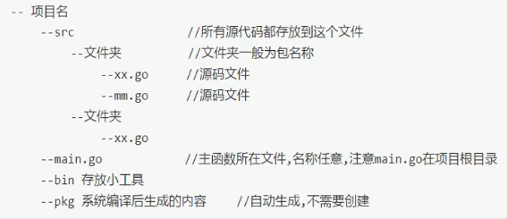
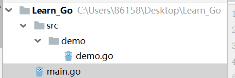
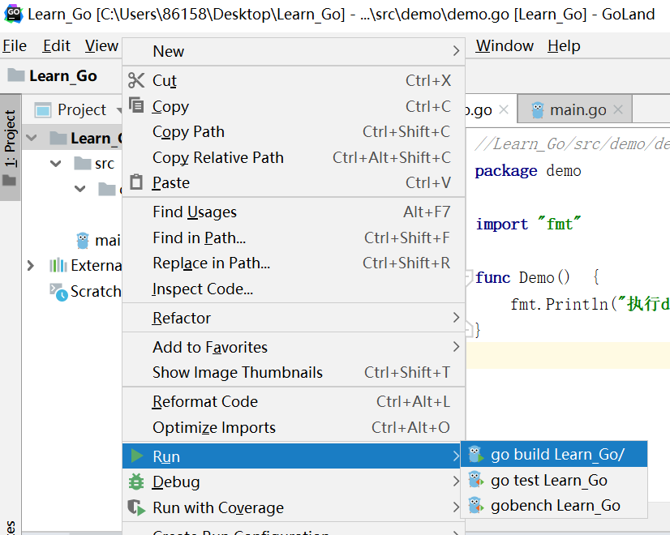
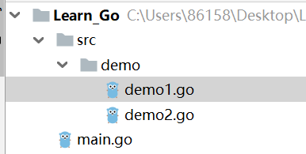

原文出处:本文由博客园博主zhang_derek提供。
原文连接:https://www.cnblogs.com/derek1184405959/p/11299671.html
原文连接:https://www.cnblogs.com/derek1184405959/p/11299671.html
3.1.goland中项目结构
（1）在goland中创建标准Go项目

（2）goland配置
创建项目Learn-Go

file-settings-go-GOPATH-添加
在项目目录下创建src目录，在src目录下创建demo目录，在demo目录下创建demo.go文件
//Learn_Go/src/demo/demo.go
package demo
import "fmt"
func Demo() {
fmt.Println("执行demo")
} 在项目目录下创建main.go文件
//Learn_Go/main.go
package main
import "demo"
func main() {
demo.Demo() //执行demo
}
目录结果

点项目右键-->>run-->>go_build Learn_Go

3.2.包和包级别访问权限
同一个包内小写可以访问，其它包要想访问必须大写
目录结果

demo1.go
//Learn_Go/src/demo/demo1.go
package demo
import "fmt"
func demo1() {
fmt.Println("执行demo111")
}
demo2.go
//Learn_Go/src/demo/demo2.go
package demo
import "fmt"
func Demo2() {
fmt.Println("执行demo222")
demo1() //同包内可以访问，不需要大写
}
main.go
//Learn_Go/main.go
package main
import "demo"
func main() {
demo.Demo2()
}
//结果
执行demo222
执行demo111
3.3.闭包
闭包就是解决局部变量不能被外部访问一种解决方案，在函数内部定义局部变量，把另一个函数当中返回值，局部变量
对于返回值函数就相当于全局变量，所以多次调用返回值函数局部变量的值跟随变化。
//Learn_Go/main.go
package main
import "fmt"
func closure() func()int{
i := 1
return func() int {
i = i+1
return i
}
}
func main() {
f := closure()
fmt.Println(f()) //2
fmt.Println(f()) //3
fmt.Println(f()) //4
}
3.4.值传递和引用传递
讨论值传递和引用传递时，其实就是看值类型变量和引用类型变量作为函数参数时，修改
形参是否会影响到实参，在Go语言中五个引用类型变量，其它都是值类型
- slice
- map
- channel
- inrerface
- fun()
引用类型作为参数时，称为浅拷贝，形参改变，实参数跟着变化，因为传递的是地址，形参和实参都指向同一块地址
值类型作为参数时，称为深拷贝，形参改变，实参不变，因为传递的是值的副本，形参会新开辟一块空间，与实参指向不同
如果希望值类型数据在修改形参时实参跟随变化，可以把参数设置为指针类型
//Learn_Go/main.go
package main
import "fmt"
//int,string:值类型 切片和指针可以改变值
func demo(i int, s string, arr []int, content *int) {
i = 110
s = "derek"
arr[0] = 3
arr[1] = 4
*content = 110
}
func main() {
a := 119
b := "jack"
c := []int{1,2}
d := 119
demo(a,b,c,&d)
fmt.Println(a,b,c,d) //119 jack [3 4] 110
}